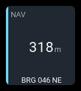
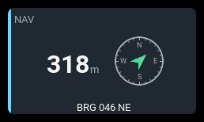

navigation
| 1x2 | 2x1 | 2x2 |
|---|---|---|
 |
 |
Shows the aircraft's GPS location, distance from home, and north-up bearing from home toward the model. The arrow is not aircraft heading, transmitter orientation, or a return-home instruction.
The GPS source supplies model coordinates and the pilot/home coordinates recorded by EdgeTX. AeroGrid does not set or reset home.
Settings
| Key | Default | Meaning |
|---|---|---|
source |
GPS |
Exact EdgeTX GPS source name; must return a coordinate table. |
presentation |
auto |
distance, bearing, compass, detailed, or auto. |
bearingFormat |
degrees |
Numeric azimuth or quadrant notation. |
showBearing |
presentation default | Independently show or hide the bearing text row. |
showCoordinates |
presentation default | Independently show or hide the latitude/longitude row. |
warning / critical |
none | Distance thresholds in metres, counting upward. |
label |
NAV |
Panel heading. |
accent |
cyan |
Panel accent: cyan, green, amber, or orange. |
Unknown settings are rejected at load. Source names are case-sensitive.
Behavior
Distance from home is always the main reading, using the configured GPS source. Home is the position recorded by EdgeTX.
Choose distance, bearing, compass, or detailed to add bearing,
a compass, or coordinates. auto adds detail as panel size allows.
showBearing and showCoordinates override the text choices.
The north-up arrow points from home toward the model and disappears when
bearing is unavailable. Choose degrees or quadrant notation, such as
N29°E, with bearingFormat. Coordinates show the model's latitude and
longitude. Set distance thresholds in metres if needed.
States
Warning and critical thresholds are always metres, including when the display uses kilometres. Critical is checked before warning.
| Condition | Presentation |
|---|---|
| Valid fix and home | Distance, live bearing, and requested coordinates. |
| No recognized GPS source | --, N/A badge, NO GPS SOURCE or a shorter form where a footer fits. |
| Source present but no fix | --, N/A badge, NO FIX where a footer fits. |
| Valid fix but no home | No distance or bearing; coordinates remain available. NO HOME POSITION or a shorter form, no failure badge. |
| Stale position | Last reading retained, STALE badge, LAST KNOWN or LAST where a footer fits. |
| Distance at or above warning/critical | Amber/red state presentation and WARN/CRIT badge. |
Zero latitude and longitude together are treated as no fix, matching
EdgeTX's uninitialized GPS values. A valid 0m reading means the model is
at home, not that GPS is unavailable.
Examples
A compass with quadrant bearing and no coordinates:
- id: location
type: navigation
col: 0
row: 0
colSpan: 2
rowSpan: 2
config:
presentation: compass
bearingFormat: quadrant
warning: 500
critical: 1000
Coordinates without bearing text, retaining the compass:
- id: position
type: navigation
col: 0
row: 0
colSpan: 2
rowSpan: 2
config:
presentation: compass
showBearing: false
showCoordinates: true
Both text rows without a compass:
- id: position-text
type: navigation
col: 0
row: 0
colSpan: 2
rowSpan: 2
config:
presentation: bearing
showCoordinates: true